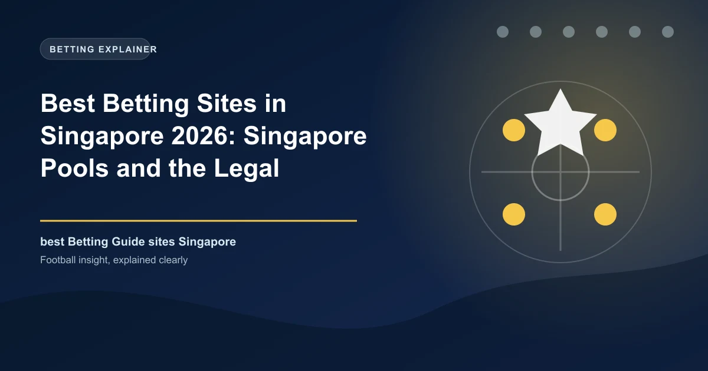

Best Betting Sites in Singapore 2026: Singapore Pools and the Legal Landscape

Unlike most markets, Singapore has exactly one legal home for sports betting: the state operator Singapore Pools. Every offshore sportsbook that markets itself to Singapore bettors is illegal — and using one can land you in trouble, not just the operator.

Singapore treats gambling very differently from most jurisdictions. It has no open, competitive betting market and no list of licensed sportsbooks to compare. Instead, the Gambling Control Act 2022 establishes a simple principle: gambling is prohibited unless it is expressly authorised — and the only operator authorised for lottery, sports betting and horse wagering is Singapore Pools, the state-owned operator.
That means the 'best betting site in Singapore' question has a single honest answer, and it is a vital one to get right. This guide explains what Singapore Pools offers football bettors, how to open an account and fund it, and exactly why the offshore books that advertise to Singaporeans are not just risky — they are illegal, actively blocked, and enforced against both operators and individual bettors.
Singapore Betting at a Glance
| Factor | Detail |
|---|---|
| Currency | Singapore Dollar (SGD / S$) |
| Regulator | Gambling Regulatory Authority (GRA) |
| Legal framework | Gambling Control Act 2022 |
| Licensed operator | Singapore Pools (sole licensee for betting, lotteries, horse wagering) |
| Account eligibility | 21+, Singapore residence, local mobile number, exclusion checks |
| Betting location | Must be physically in Singapore (geofenced) |
| Offshore sites | Illegal; blocked by ISPs and payment providers |
The Law: Why Singapore Has Only One Operator
The Gambling Control Act 2022 (which took in the old Betting Act, Common Gaming Houses Act, Private Lotteries Act and Remote Gambling Act) keeps Singapore's 'prohibited unless authorised' model. The GRA licences Singapore Pools, whose licence was renewed for five years from 25 October 2025, and that is the mainstream lawful online betting channel — there is no Ontario-style registry of competitors or path for an offshore operator to become tax-compliant in Singapore.
Singapore Pools: Your Only Legal Sportsbook
Singapore Pools is the sole licensed provider of sports betting in Singapore, offering football betting on the English Premier League, the S-League and chair International football including World Cup qualifying, alongside TOTO lottery and horse racing (through its association with the racing industry). Its strengths are legitimacy, security and responsible play: accounts are verified with NRIC or FIN checks, winnings are paid directly into your registered bank account, and the product carries none of the disputes you encounter at unregulated offshore books.
- Markets within reach: match result, over/under goals, correct score and other football markets on the EPL, S-League and international fixtures
- Eligibility: aged 21 and above, holding a Singapore residential address and local mobile number
- Geofencing: bets may only be placed while physically in Singapore
Opening an Account: Step by Step
- Go to the Singapore Pools website or download the app.
- Register with your NRIC or FIN, a Singapore residential address and a local mobile number.
- Approve the app on your Singpass and complete exclusion checks.
- Verify your bank account for deposits and payouts.
- Fund your account and place bets only while physically in Singapore.
Funding Your Account and Withdrawing
Singapore Pools supports PayNow, bank transfer and debit cards for deposits, and winnings are credited to your registered bank account. There is a 25% duty retained on qualifying prizes in line with Singapore's gambling-duty framework, so confirm the exact rate that applies to your bet type on the operator's own terms page — it varies by product. Practically, everything stays inside Singapore's banking system, so money moves to your account quickly and without the withdrawal friction of offshore books.
Why Offshore Betting Sites Are a Bad Idea in Singapore
Singapore actively protects its model. ISPs are required to block websites offering illegal gambling, payment providers block money flows to them, and the GRA and police run enforcement operations — including dedicated crackdowns around major football events such as the World Cup. Individual users also face consequences, not just operators: betting with an illegal operator is itself an offence under the Act, and the courts have repeatedly prosecuted it.
Beyond the legal exposure, unregulated offshore books give you no consumer protection at all. No Singapore regulator will mediate a payout dispute, deposited funds can simply vanish, your personal and banking data goes entirely outside Singapore law, and because payment providers are prevented from routing money to illegal operators, even depositing may not work. There is simply no upside to balance against these risks.
Betting Football the Legal Way
Singaporean football fans can still enjoy real betting market on the EPL and international fixtures through Singapore Pools, and its markets are clean and fairly priced. Treat football betting as entertainment: decide your weekly budget in advance, stake small, and never chase losses. Unlike offshore operators, Singapore Pools actively enforces deposit limits and loss controls with Singapore's responsible-play standards, which is a protection you are unlikely to miss until you sit at an unregulated book and wish you had it.
Responsible Gambling in Singapore
Singapore's model leans hard into harm prevention. Singapore Pools carries a Level 4 Responsible Gambling Programme certification, and the National Council on Problem Gambling provides counselling, gambling-care services and the Exclusion Register. Set your own deposit and time limits in the app, and if betting stops being fun, use the operator's self-exclusion tools or contact NCPG — the support network is among the best funded in the world, precisely because the system is designed for safety over growth.
Frequently Asked Questions
Is online betting legal in Singapore?
Only through Singapore Pools, the sole operator licensed for betting, lotteries and horse wagering under the Gambling Control Act 2022. Every other online betting service is illegal, and offshore sportsbooks that accept Singapore residents are unlawfully operating.
What is the only legal betting site in Singapore?
Singapore Pools. There is no competitive registry of licensed sportsbooks — it holds the only mainstream licence for sports betting, and its products include football, TOTO and horse racing.
Are offshore betting sites (like BK8 or bet365) legal in Singapore?
No. These operate without Singapore authorisation. ISPs must block them, payment providers must not process them, and using them is an offence. Advertising them is also a criminal offence.
Can I bet on football in Singapore?
Yes, legally at Singapore Pools, which covers the English Premier League, the S-League and international football. You must be 21+, hold a Singapore address and mobile number, and only place bets while physically in Singapore.
What happens if I bet with an illegal operator?
You are committing an offence under the Gambling Control Act and could face prosecution. Independently, you have no consumer protection, no regulator to mediate disputes, and your funds and data exist entirely outside Singapore law.
Put These Principles Into Practice Today
Every strategy on this page is only as good as the markets you apply it to. Check the latest predictions, odds, and in-play opportunities below.
Last updated: August 2026 | By Tochukwu Mesigo |
Build Winning Accumulator Tickets
Generate optimized accumulator combinations from today's data-driven predictions. Set your target odds and get instant ticket suggestions.
Pro Ticket Builder →